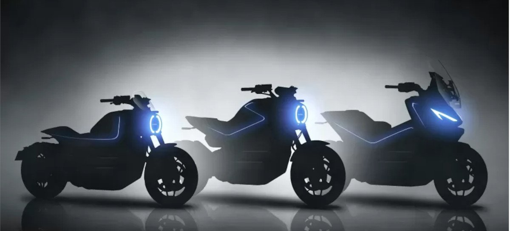

Sony e Honda anunciam associação para desenvolver veículos elétricos
Os dois grupos japoneses preveem fundar uma empresa conjunta este ano para desenvolver e vender "veículos elétricos com bateria de alto valor agregado", além de fornecer serviços de mobilidade
A gigante da eletrônica Sony e a montadora Honda anunciaram a intenção de estabelecer uma "aliança estratégica" para desenvolver e produzir veículos elétricos e comercializá-los a partir de 2025. Os dois grupos japoneses preveem fundar uma empresa conjunta este ano para desenvolver e vender "veículos elétricos com bateria de alto valor agregado", além de fornecer serviços de mobilidade.
Honda deve lançar pelo menos 10 motos elétricas até 2025:
A empresa também pretende reduzir a emissão das motos a combustão introduzindo motor flex brasileiro em outros países
A Honda, maior fabricante do motocicletas do mundo, está trabalhando em uma expansão focada na eletrificação.Segundo a fabricante, a ideia é lançar ao menos 10 motos elétricas inéditas até 2025, todas elétricas.
A marca japonesa pretende lançar motos em três categorias — mobiletes, scooters e streets. No primeiro, a velocidade máxima será de até 25 km/h. Já as scooters podem chegar até 50 km/h. Por fim, as streets ultrapassarão os 50 km/h, mas sem máximo definido. Motos elétricas para crianças também estão nos planos da Honda, assim como e-bikes com pedais assistidos.